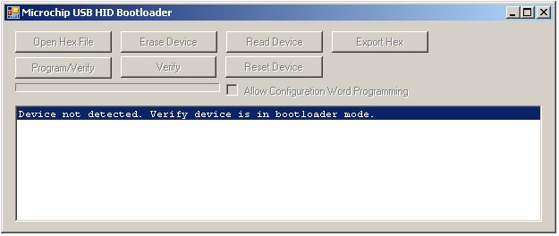
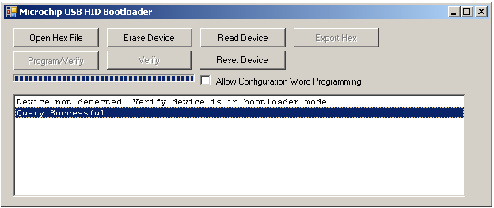

Getting Started: Using the “USB
Device – Bootloaders”
In many
types of applications, it is often desirable to be able to field update the firmware
used on the flash microcontroller, such as to perform bug fixes, or to provide
new features. Microchip’s flash memory
based USB microcontrollers have self programming capability, and are therefore
able to perform self updates of application firmware. This can be achieved by downloading a new
firmware image (.hex file) through the USB port.
The
MCHPFSUSB v2.2 distribution comes with two separate USB bootloader example
applications (and corresponding firmware projects): “HID Bootloader” and “MCHPUSB
Bootloader”.
As of
this release the “HID Bootloader” is intended to be used with the PIC18F87J50
family devices, PIC18F4550 family devices, PIC18F4553 family devices,
PIC18F4450 family devices, and PIC24FJ256GB110 family devices. The bootloader
comes with full firmware and PC software source code, and is intended to be
easily modified to support other Microchip USB microcontrollers.
The
“MCHPUSB Bootloader” is intended to be used with the following
microcontrollers: PIC18F4550, PIC18F4455, PIC18F2550, PIC18F2455, PIC18F4553,
PIC18F4458, PIC18F2553, PIC18F2458.
The
“<install directory>\USB Device - Bootloaders\HID - Bootloader”
bootloader is new starting with the MCHPFSUSB v2.2 distribution. This bootloader is currently intended to be
used with the PIC18F87J50 family of USB microcontrollers. The bootloader relies on the HID class
protocol. Therefore, no driver
installation is necessary, as common operating systems ship with HID class USB
drivers built in.
As
currently configured, the bootloader has the following characteristics:
Two USB Stacks Approach: The bootloader firmware contains
all of the code needed for self programming, as well as all of the necessary
code to enumerate as a HID class USB device.
The HID
bootloader firmware is an entirely stand alone MPLAB® IDE based project. The “main application” firmware should be a
separate MPLAB IDE based project altogether.
The main application firmware is intended to be entirely independent of
the bootloader. This requires that the
main application should also contain a fully functional and complete USB
stack. However, only one of the USB
stacks is used at any given time.
With
this approach, the main application firmware need not be a HID class device
(nor does it need to be a “composite” device).
In order to switch between the main application and the USB bootloader,
the device “functionally detaches” itself from the USB bus (by temporarily
turning off the pull up resistor), and then re-enumerates as the other firmware
project.
Bootloader Entry Method:
As currently configured, the bootloader firmware resides in program
memory in address range 0x00-0xFFF.
Almost immediately after coming out of reset, the bootloader firmware checks
I/O pin RB4 (which happens to have a pushbutton attached to it on the
PIC18F87J50 PIM). If the pushbutton is
not pressed, the bootloader will immediately exit the bootloader and go to the
main application firmware “reset vector”.
In other
words, the bootloader effectively does this:
//Device
powers up, and comes out of POR
if(RB4 pushbutton is not pressed) --> goto
0x1000 //main application “reset vector”
if(RB4 pushbutton is pressed) --> goto/stay in
main bootloader project.
Effectively,
the “reset” vector for the main application firmware is at address 0x1000. In the main application firmware project, the
user should place a “goto _startup” at address
0x1000. This will allow the C initializer code to execute, which will initialize things
like the software stack pointers and any user “idata”
variables. For an example, see one of
the USB device firmware projects, such as the “HID - Mouse” project. The PIC18F87J50 version of this project is
already configured to allow the generated .hex file to function along with the
USB bootloader project.
Vector Remapping:
As currently configured, the bootloader occupies the address range
0x00-0x7FF, which means it occupies the PIC18 reset, high priority, and low
priority interrupt vector locations. The
bootloader firmware itself does not enable or use interrupts. In order to make interrupts available for use
by the main application firmware, the interrupt vectors are effectively
“remapped” by placing goto instructions at the actual
vector locations. In other words:
Address
0x08 (high priority interrupt vector), contains a “goto
0x1008”.
Address
0x18 (low priority interrupt vector), contains a “goto
0x1018”.
For
example, if a high priority interrupt is enabled and used in the main
application firmware, the following will occur:
1. Main application enables the interrupt
source.
2. Sometime later, the interrupt event occurs.
3. Microcontroller PC jumps to 0x08.
4. Microcontroller executes a “goto 0x1008”.
5. Microcontroller executes the main application
interrupt handler routine, which has an entry point at address 0x1008. (Note: The interrupt handler routine itself
might not be at address 0x1008, but another bra/goto
may be located at 0x1008 to get to the real routine)
Note:
When using the HID bootloader for PIC32, it is
important to modify the procdefs.ld file to relocate
the sections of code that will hold the bootloader
and those sections that will hold the user application. Example modified procdefs.ld
files have been provided with each project. This file is currently names “Procdefs.ld.boot”. When
using the example project with the bootloader it is
required to remove the “.boot” section of the file. This will allow MPLAB to use this file instead
of the default linker file. Once the
linker file is renamed, however, the project will no longer work without the bootloader. Please
rename the file in order to get the project working again with PIC32.
Using the HID Bootloader PC
Application: The HID Bootloader firmware is intended to
interface with the “HIDBootLoader.exe” PC application.
Before
you can run the HIDBootLoader.exe executable, you will need to have the
Microsoft® .NET Framework Version 2.0 Redistributable Package (later versions
probably okay, but not tested) installed on your computer. Programs which were built in the Visual
Studio® .NET languages require the .NET redistributable package in order to
run. The redistributable package can be
freely downloaded from Microsoft’s website.
Users of Windows Vista® operating systems will not need to install the
.NET framework, as it comes pre-installed as part of the operating system.
The
source code for the HIDBootLoader.exe file was created in Microsoft Visual C++®
2005 Express Edition. The source code
can be found in the “<Install Directory>\USB USB Device - Bootloaders\HID
- Bootloader\HID Bootloader - PC Software” directory. Microsoft currently distributes Visual C++
2005 Express Edition for free, and can be downloaded from Microsoft’s
website. When downloading Microsoft
Visual C++ 2005 Express Edition, also make sure to download and install the
Platform SDK, and follow Microsoft’s instructions for integrating it with the
development environment.
It is
not necessary to install either Microsoft Visual C++ 2005 or the Platform SDK
in order to use the HID Bootloader.
These are only required in order to modify or recompile the PC software
source code.
To run
the application, simply double click on the executable, which can be found in
the following directory: “<Install Directory>\USB USB Device -
Bootloaders\HID – Bootloader”. Upon
launching the application, a window like that shown below should appear:

If the
application fails to launch, but instead causes a non-descript error message
pop up box to appear, it is likely that the .NET framework redistributable has
not been installed. Please install the
.NET framework and try again.
Upon
launch, the HIDBootLoader.exe program will do a search, looking for HID class
devices with VID = 0x04D8, and PID = 0x003C.
This is the same VID/PID that is used in the HID Bootloader firmware
project, which is found in the following directory: “<Install
Directory>\USB Device - Bootloaders\HID - Bootloader\HID Bootloader -
Firmware for PIC18F87J50 Family Devices”.
In order
to use the bootloader, you will need to program a device with the bootloader
firmware. If using the PIC18F87J50 FS
USB Plug-In Module board, the precompiled demo “USB Device - HID - HID
Bootloader - C18 - PIC18F87J50 PIM.hex” can be used,
which is located in the “<Install Directory>\USB Precompiled Demos”
folder. After the HID bootloader
firmware has been programmed, continuously hold down the S4 (RB4) pushbutton,
and then tap and release the MCLR pushbutton.
After exiting from MCLR reset, the bootloader firmware will make a quick
check of the RB4 pushbutton I/O pin state.
If the pushbutton is pressed, it will stay in the bootloader.
Assuming
that the device is connected correctly, and in bootload mode, the
HIDBootLoader.exe application should automatically detect the device. The application uses WM_DEVICECHANGE messages
in order to make for a smooth plug and play experience. Once the application detects the device, some
of the buttons in the application should automatically become enabled.

At this
point, “main application” firmware images can be loaded and programmed using
the bootloader. The main application
should not try to put code in addresses 0x00-0xFFF, because the bootloader will
not attempt to program these locations (which is where the bootloader firmware
resides). Therefore, when building the
main application hex files, a modified linker script should be used. The “rm18f87j50.lkr” file included in the
various USB device projects (such as in the “HID Mouse” project) shows an
example of how this can be done.
By
default, all of the PIC18F87J50 USB device projects in MCHPFSUSB v2.2 are
pre-configured to be useable with the HID Bootloader. Therefore, the pre-compiled demo firmware
files, such as the “USB Device - HID - Mouse - C18 - PIC18F87J50 PIM.hex” can be directly programmed with the bootloader.
After an
appropriate hex file has been programmed, simply reset the microcontroller
(without holding down the RB4 pushbutton) to exit the bootloader and begin
running the main application code. If
the “USB Device - HID - Mouse - C18 - PIC18F87J50 PIM.hex”
file was used with the PIC18F87J50 PIM, the mouse cursor should promptly begin
moving around in a circular pattern.
NOTE:
The “USB Device - Mass Storage - SD Card reader” and “USB Device - Mass Storage
- SD Card data logger” demos make use of the SD Card PICtail™ Daughter Board
(Microchip Direct: AC164122). This PICtail
uses the RB4 I/O pin for the card detect (CD) signal, and is actively driven by
the PICtail. The active drive overpowers
the pull up resistor on the RB4 pushbutton (on the PIC18F87J50 FS USB Plug-In
Module board). As a result, if the
PIC18F87J50 is programmed with the HID bootloader, and an SD Card is installed
in the socket when the microcontroller comes out of reset, the firmware will
immediately enter the bootloader (irrespective of the RB4 pushbutton
state). To exit the bootloader
firmware, remove the SD Card from the SD Card socket, and tap the MCLR
button. When the SD Card is not plugged
in, the PICtail will drive the card detect signal (which is connected to RB4)
logic high, which will enable the bootloader to exit to the main application after
coming out of reset. Once the main
application firmware is operating, the SD Card can be plugged in. The SD Card is “hot-swappable” and should be
recognized by the host upon insertion.
To avoid this inconvenience when using the bootloader with the PICtail,
it is suggested to modify the bootloader firmware to use some other I/O pin for
bootloader entry, such as RB0 (which has a pushbutton on it on the HPC Explorer
board).
The
“<install directory>\USB Device - Bootloaders\Vendor Class - MCHPUSB
Bootloader” bootloader is essentially the same as that which is distributed in
previous MCHPFSUSB v1.x distributions.
This bootloader is meant to be used with the PIC18F4550 family and
PIC18F4553 family of USB microcontrollers.
The bootloader relies on the MCHPUSB custom (vendor) class general
purpose USB driver. This driver can be
found in the “<Install Directory>\USB Tools\MCHPUSB Custom Driver\MCHPUSB
Driver\Release” folder.
As
currently configured, the bootloader has the following characteristics:
Two USB Stacks Approach: The bootloader firmware contains
all of the code needed for self programming, as well as all of the necessary
code to enumerate as a custom (vendor) class USB device (which uses the
mchpusb.sys custom driver).
The
MCHPUSB bootloader firmware is an entirely stand alone MPLAB IDE based
project. The “main application” firmware
should be a separate MPLAB IDE based project altogether. The main application firmware is intended to
be entirely independent of the bootloader.
This requires that the main application should also contain a fully
functional and complete USB stack.
However, only one of the USB stacks is used at any given time.
With
this approach, the main application firmware need not be a custom class device
(nor does it need to be a “composite” device).
In order to switch between the main application and the USB bootloader,
the device “functionally detaches” itself from the USB bus (by temporarily
turning off the pull up resistor), and then re-enumerates as the other firmware
project.
Bootloader Entry Method:
As currently configured, the bootloader firmware resides in program
memory in address range 0x00-0x7FF.
Almost immediately after coming out of reset, the bootloader firmware checks
I/O pin RB4 (which happens to have a pushbutton attached to it on the PICDEM™
FS USB Demo Board). If the pushbutton is
not pressed, the bootloader will immediately exit the bootloader and go to the
main application firmware “reset vector”.
In other
words, the bootloader effectively does this:
//Device
powers up, and comes out of POR
if(RB4 pushbutton is not pressed) --> goto
0x800 //main application “reset vector”
if(RB4 pushbutton is pressed) --> goto/stay in
main bootloader project.
Effectively,
the “reset” vector for the main application firmware is at address 0x800. In the main application firmware project, the
user should place a “goto _startup” at address
0x800. This will allow the C initializer code to execute, which will initialize things
like the software stack pointers and any user “idata”
variables. For an example, see one of
the USB device firmware projects, such as the “HID - Mouse” project. The PICDEM FSUSB version of this project is
already configured to allow the generated .hex file to function along with the
USB bootloader project.
Vector Remapping:
As currently configured, the bootloader occupies the address range
0x00-0x7FF, which means it occupies the PIC18 reset, high priority, and low
priority interrupt vector locations. The
bootloader firmware itself does not enable or use interrupts. In order to make interrupts available for use
by the main application firmware, the interrupt vectors are effectively
“remapped” by placing goto instructions at the actual
vector locations. In other words:
Address
0x08 (high priority interrupt vector), contains a “goto
0x808”.
Address
0x18 (low priority interrupt vector), contains a “goto
0x818”.
For
example, if a high priority interrupt is enabled and used in the main
application firmware, the following will occur:
1. Main application enables the interrupt
source.
2. Sometime later, the interrupt event occurs.
3. Microcontroller PC jumps to 0x08.
4. Microcontroller executes a “goto 0x808”.
5. Microcontroller executes the main application
interrupt handler routine, which has an entry point at address 0x808. (Note: The interrupt handler routine itself
might not be at address 0x808, but another bra/goto
may be located at 0x808 to get to the real routine)
Using the MCHPUSB Bootloader PC Application:
The MCHPUSB bootloader uses the PICDEM FS USB Demo Tool (pdfsusb.exe)
for downloading/programming new firmware images from the PC.
This program can be found in the following directory: “<install
directory>\USB Tools\Pdfsusb”. Documentation describing how to use this tool
is found in chapter 3 of the PICDEM FS USB Demo Board User’s Guide
(DS51526). This document can be found in
the following directory, “<install directory>\Microchip\USB\Documentation\Board
Information\51526b.pdf”. (Note: A newer
version of this document may exist, please check the Microchip website. The 51526b.pdf
version of the document is written with the assumption that the user is working
with MCHPFSUSB v1.x, which uses a somewhat different directory structure
compared to that of MCHPFSUSB v2.2)
The Microchip
name and logo, the Microchip logo, MPLAB, and PIC are registered trademarks of
Microchip Technology Incorporated in the
PICDEM and PICtail are trademarks of Microchip
Technology Incorporated in the
Microsoft, Windows, Visual Studio, Visual C++, and Windows Vista
are either registered trademarks or trademarks of Microsoft Corporation in the